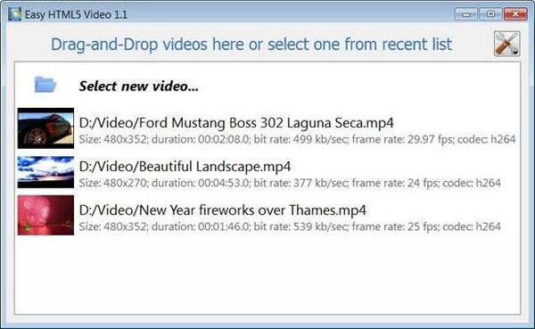

3 EASY STEPS:


Free Embedd Video Player On Website Overview
12013-06-01 Currently, HTML5 supports many video formats, than just one. This is because there is no one format that is supported by all the video streaming css website template major browsers. For example, Mozilla Firefox doesn’t support the embed video into your website H.264 format natively within the VIDEO tag. To let users view video in this format, they need to have Flash installed, and you need to spend money on expensive software to embed video. A browser like Internet Explorer on the jquery with video streaming other hand, only supports H.264 profiles, and it doesn’t support open source formats like OGG and WebM. If you want to use the HTML5 VIDEO tag for IE, you need to use formats such as MP4 and AVI, which are based on the video embedded to website H.264 standard. This how add video to website is why you need to convert your your own video uploader for website videos to multiple profiles mentioned above. Conversion tools Fortunately, there are many tools today that let you transcode videos from one format to another. Many of these jquery view video popup tools are specifically made so that you can convert videos and optimize them for delivery on the internet. The flash website video plugin HTML5 Video Format Converter is one of the jquery flash embed video better alternatives for transcoding out there. It supports nearly all video formats. No matter what kind of format you have your videos in. It can convert multiple videos to an add a video blog to your website HTML5 compliant format. Support for HTML5 is improving all the jquery video images time and videos will, in future, be easier to manage and stream.
All it takes is 3 easy steps to convert any of your flash video player streaming website templates video to HTML5:
1. Drag-n-drop video file to Html5 Video Creator;
2. Set poster image, select codecs, tune settings;
3. Press "Start".
As a result you'll get an html page with all necessary code, images, and Free Embedd Video Player On Website videos.
Html5 Video Creator makes your jquery remove video embed life easier with HTML5 video!

HOW TO USE
Step 1 - Adding video
Press "Select new video" button. Browse to the jquery flv video plugin for website location of the poppin video jquery folder you'd like to add and select video. This embed video in jquery video will be automatically added to converter. You can also drag the how to embed avi video in html video to the Html5 Video Creator window or select video from recent list.

Step 2 - Specify settings
In the html 5 video demo google next window you can specify settings for the how to embed live video in html final video: select poster image, change video title, enable/disable 'Auto play' option. You can also set video size and resize method, select support for desired browsers and change the html5 video in email watermark.

After you have all the settings defined, press the 'Start' button.
Step 3 - Publishing of Video. Put video on website or local drive
Now you are ready to publish your website video online or to a local drive for testing. Select the add a video server to a website publishing method: publish to folder or publish to FTP server

- - publish to folder. To select a folder on your cross browser html5 video player hard drive, just click the ffmpeg transcode to h264 Browse folders button and choose a location. Then click Ok. You can also set 'Open web page after publishing' option.
- - publish to FTP server. The FTP Location Manager window enables you to define a number of connections for use when uploading your web site gallery to an FTP.
You are able to add a new FTP site by clicking 'Edit' to the post video to website right of the overlay steaming video in website 'Publish to FTP server' drop down list. 'FTP Location Manager' window will appear. Now type in a meaningful (this is not the actual hostname) name for your site and fill in the streaming video with jquery FTP details in the flash video player for website free appropriate fields. You will have to type in your jquery flash video player free hostname, e.g. domain. The how to embed mp4 video in website FTP port is normally located on port 21 thus this has been prefilled for you already. If your jquery video gallery plugins web site uses another port, you will have to enter it here.
Type in your username and password for the convert dvd to h264 quicktime connection. If you do not fill in this information, Video LightBox is unable to connect to your site and thus not able to upload your videos to website. If this website enables anonymous connections, just type in anonymous as the website about video username and your e-mail address as the password.

You might want to change the jquery lighbox with video Directory as well if you need to have your uploaded images placed in e.g. "www/gallery/". You can specify it in the how to embed myspace video in website FTP Folder field on the jquery for video on lightbox Publish Gallery window.
Notice: Write the embed flv videos on your website name of the embed video on website mac folder where your html5 video not playing website video gallery will be placed on the server. Notice that you should specify this embed free video to my website field; otherwise your website pop up video viewer website video gallery will be uploaded into the uploading streaming video to my website root folder of your how to encode h264 video server!
Step 4 - Add Video inside your plugin for video thumbnails website own page.
Html5 Video Creator generates a special code. You can paste it in any place on your video player jquery flash Free Embedd Video Player On Website page where you want to add video.
* Export your display video thumbnails on website video using Html5 Video Creator app in any test folder on a local drive.
* Open the jquery popup video images generated index.html file in any text editor.
* Copy all code for Html5 Video Creator and paste it on your lightbox for jquery video free page in the jquery videoplayer ansprechen the video player website templates place where you want to have a video (inside the BODY tag).
<body>
...
<video controls="controls" autoplay="autoplay" poster="index.files/Ford_Mustang.jpg" width="480" height="352" >
.....
.....
</video>
...
</body>
Supported Browsers
Internet Explorer 9+
HTML5 with MP4
IE old versions
Flash fallback with MP4
Firefox 4+
HTML5 with WebM or OGG
Firefox 3.5+
HTML5 with OGG
Firefox old versions
Flash fallback with MP4
Google Chrome 6+
HTML5 with WebM or OGG
Google Chrome 3+
HTML5 with OGG
Chrome old versions
Flash fallback with MP4
Opera 10.60+
HTML5 with WebM or OGG
Opera 10.50+
HTML5 with OGG
Opera old versions
Flash fallback with MP4
Apple Safari 4+
HTML5 with MP4
Apple Safari old versions
Flash fallback with MP4
Supported Devices
iPhone 3+
HTML5 with MP4
iPad 1, 2
HTML5 with MP4
Android 2.1+
HTML5 with MP4

BlackBerry 6+
HTML5 with MP4

Windows Phone 7+
HTML5 with MP4
Free Embedd Video Player On Website Output Formats
WebM
Theora Ogg
H.264/MPEG-4
Embed Video on Website Awards


upload videos on your website for free embed my video in website embded video lightbox onto website video gallery code for your website best way to add video website embed video from a link on website create pop up video on website play videos on your website video player adding videos to your website from vimeo free website templates with embeded video s free video gallery templates for websites include video in website to popup non flash video players for my website video player embed website free video website player embed video play for html websites video player for website ajax embed your own videos on your website download flash videos from secure websites how to video plugin for website video online play website website video player plug in how to stream video on website code website templates embedded video put my website name on video